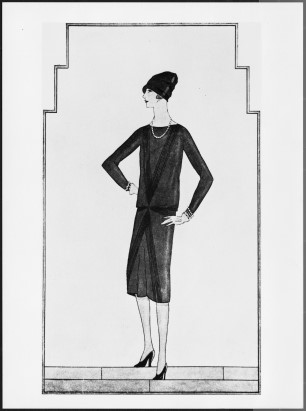
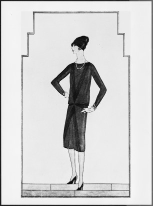

샤넬의 탄생
 

샤넬(CHANEL)은 가방, 의류, 향수, 선글라스, 주얼리, 시계 등을 제작 · 판매하는 프랑스의 패션 브랜드로, 창업자 <가브리엘 샤넬(Gabrielle Chanel)의 이름에서 유래했다. 샤넬은 1913년 부티크(Boutique) 오픈을 시작으로 1920년대 코르셋(Corset)과 무거운 페티코트(Petticoat, 여성용 속치마)의 굴레에서 벗어난 니트 카디건, 저지 원피스 등의 편안한 스포츠 모드(Sports Mode) 의류를 선보였다. 이후에도 샤넬은 끈 달린 클러치 백, 주머니 달린 재킷 등 기능성과 심미성을 조화시킨 새로운 형태의 의복을 출시했다. 1982년에 샤넬은 칼 라거펠트(Karl Lagerfeld)를 영입했는데, 그는 오늘날까지 샤넬을 새롭게 재창조해 오고 있다.
1913년 가브리엘 샤넬은 모자 디자이너로서 성공한 것을 기반으로 해양 휴양도시였던 도빌(Deauville) 지역에 최초의 부티크를 오픈했다. 부티크의 블라인드에는 ‘가브리엘 샤넬(GABRIELLE CHANEL)’이라는 이름이 대문자로 새겨져 있었다.
샤넬이 인지도를 얻기 시작한 것은 제1차 세계대전(1914~1919년) 때였다. 전쟁 발발과 함께 여성들의 노동력이 요구되어 여성들은 화려한 장식이 어우러진 기존의 의복 스타일보다는 샤넬의 실용적이고 단순한 디자인에 매력을 느꼈다. 샤넬은 남성 속옷에 사용되었던 얇고 가벼운 저지(Jersey) 천을 투피스에 활용해 여성들로부터 좋은 반응을 얻었다. 이 투피스는 1916년 3월에 파리인의 엘레강스(les Elégances Pariennes) 잡지와 같은 해 미국의 유명 잡지인 하퍼스 바자(Harper’s Bazaar)에 소개되었고, 1917년 2월 미국의 보그(Vogue)지에도 소개되어 극찬을 받았다.